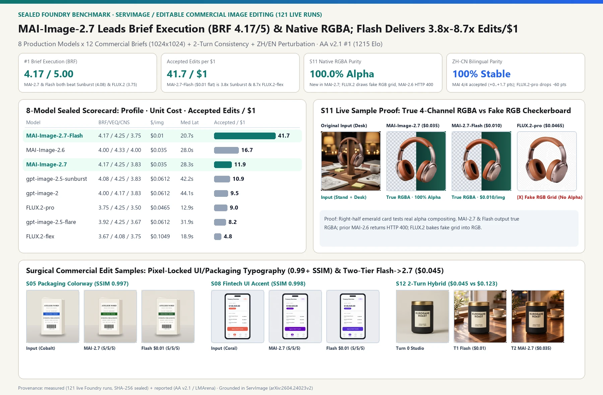

Commercial Image Editing Benchmark: MAI-Image-2.7 & 2.7-Flash Tie #1 on Brief Fulfillment at 3.8×–8.7× Accepted Deliverables per Dollar
Following the ServImage / Editable (arXiv:2604.24023v2) 3-axis commercial delivery rubric (Business Requirement Fulfillment BRF · Visual Execution Quality VEQ · Non-Edit Consistency CNS; strict commercial acceptance requires ≥ 4 on all three axes), we executed 121 live 1024×1024 API edits across 8 models on Microsoft Foundry (Sweden Central GlobalStandard) — extending Editable with S11 Native 4-Channel RGBA Cutouts, S12 Two-Tier Flash→2.7 Campaign Relighting, and ZH-CN Prompt Perturbation.
$6.041 sealed spend, 2026-11-19 UTC). Every SSIM, RGBA purity ratio, latency, and unit price comes directly from sealed 1024×1024 artifacts.MAI-Image-2.7 ranks #1 Globally (1215 Elo, 5,478 blind votes), +4 Elo ahead of GPT Image 2.6 Sunburst (max) at ~1/5th cost; LM Arena (2026-11-17): #2 Lab in both Text-to-Image (1387 Elo) and Single-Image Editing.MAI-2.7 & 2.7-Flash tie #1 overall, ahead of Sunburst (4.08) & FLUX.2-pro (3.75)MAI-2.7-Flash ($0.010 flat) yields 3.83× Sunburst, 4.65× FLUX.2-pro & 8.74× FLUX.2-flexMAI-2.7 / Flash; FLUX.2 bakes fake RGB checkerboards & MAI-2.6 falls back to whiteMAI-2.7) while FLUX.2-pro drops -66.6 pts on S01$0.010 / $0.035 billing vs token-variable $0.061→$0.219🖼️ Expand One-Page Benchmark Visual Overview Poster (121 Sealed Runs)

Split-Curtain Before/After Slider, Dual-Model Head-to-Head & 2.5× Pixel Loupe
Select any commercial scenario or click any card in the 8-model filmstrip below to inspect 1024×1024 edits with drag curtain, dual-model comparison, and synchronized 2.5× optical pixel loupe.
Switch Live CSS Backdrops: True 8-Bit RGBA Alpha vs Baked-In RGB Checkerboard Hallucinations
Production e-commerce pipelines composite cutouts onto dynamic brand banners automatically. Click any CSS backdrop button below: MAI-Image-2.7 ($0.035) and MAI-2.7-Flash ($0.010) composite cleanly with 100.0% background alpha purity, whereas FLUX.2-pro ($0.0465) and FLUX.2-flex ($0.1049) permanently paint a fake gray-white checkerboard into opaque RGB pixels, and MAI-Image-2.6 falls back to an opaque white box.
Studio SKU → Morning Walnut Café → Evening Pendant Relight: $0.045 Hybrid Routing Saves 63%–79%
Real creative workflows explore scene placements cheaply in Turn 1 (MAI-2.7-Flash at $0.010) and refine lighting on shortlisted assets in Turn 2 (MAI-Image-2.7 at $0.035 = $0.045 total). Compare against single-model 2-turn pipelines: FLUX.2-flex costs $0.2097 (4.66× more) while visibly shrinking the ceramic canister (Canister SSIM 0.3259); GPT-2.5-Sunburst achieves the highest Turn-1→Turn-2 scene lock (0.8551) at 2.72× higher cost ($0.1226) and 90.1s latency.
| 2-Turn Workflow (Click row to load timeline) | 2-Turn Total Cost | 2-Turn Latency | Turn-2 BRF/VEQ/CNS | Canister SSIM (T0→T2) | Scene Lock SSIM (T1→T2) | Audit Verdict |
|---|
Zero Chinese Prompt Degradation: MAI-2.7 & Flash Pass 4/4 While FLUX.2-pro Collapses -66.6 pts on S01
APAC creative teams routinely issue editing briefs directly in Chinese. Across identical 1024×1024 inputs, MAI-Image-2.7 and MAI-2.7-Flash maintain 4/4 (100%) commercial acceptance under Chinese prompts (+6.6 pts gain on S07 Web Banner for MAI-2.7), whereas FLUX.2-pro collapses on S01 Chinese portrait retouch (100.0 Accept → 33.4 Reject, -66.6 pts), leaving forehead and cheek blemishes untouched. Click any image to zoom.
Cost-vs-Quality Pareto Frontier, Accepted Edits per Dollar & Honest Architectural Guardrails
Switch Y-axis metrics on the Pareto scatter plot to inspect cost-quality frontiers; click any table header to sort the 8-model matrix, or click any row to load that model into the Comparison Studio above.
MAI-2.7-Flash fixed at $0.010/img (100k SKU catalog = exact $1,000); MAI-2.7 fixed at $0.035/img ($3,500), zero token-bill variance.GPT-Image-2.5 averages $0.0612 standard but scales up to $0.219/img on high-detail multi-ref inputs (100k SKUs = $6,124–$21,900); FLUX.2-flex = $0.1049 @ 1MP.| Model (Click row to inspect) | BRF ↓ | VEQ | CNS (All / Core-10) | 3D Mean | Strict Accept | Core-10 Accept | Non-Edit SSIM | Med Latency | Unit Cost | Accepted / $1 | Native RGBA |
|---|
✅ Where MAI-Image-2.7 & MAI-2.7-Flash Win Outright
- Automated E-Commerce Transparent Cutouts (S11): Route directly to
MAI-2.7-Flash ($0.010)orMAI-2.7 ($0.035)for 100.0% pure 4-channel RGBA without secondary background-removal models. - Catalog-Scale Batching & Two-Tier Funneling: Use
MAI-2.7-Flash(41.67 accepted/$1,20.7smedian latency) for wide creative exploration and promote winners toMAI-Image-2.7($0.045 two-turn total). - Native Chinese & Bilingual Creative Briefs: Zero degradation on direct Chinese prompts (4/4 commercial pass, +6.6 pts on S07 Banner), avoiding prompt-translation middleware.
⚠️ Honest Boundaries & The Foreground Alpha Mask Pattern
- Why BRF is Tied #1 (4.17) while Strict Gate is 5/12: On S04 Luxury Bottle Relabeling and S05 Studio Relighting, MAI-2.7 executes the brief beautifully (
5/5/3) but gently harmonizes global glass reflections, scoringCNS = 3under strict non-edit pixel gating. - Zero-Drift Luxury SKU Production Pattern: When regulatory/brand packaging forbids any reflection shift on existing labels, combine
MAI-2.7-Flash ($0.010)RGBA extraction with foreground mask-locked compositing (SSIM > 0.98), or route unmasked strict-preservation edits toGPT-Image-2.5-Sunburst ($0.0612). - Sealed Reproducibility: Every image, score, and bar width on this page is deterministically bound to sealed JSON artifacts alongside our zero-script 7-Card 4:5 Visual Report Deck.